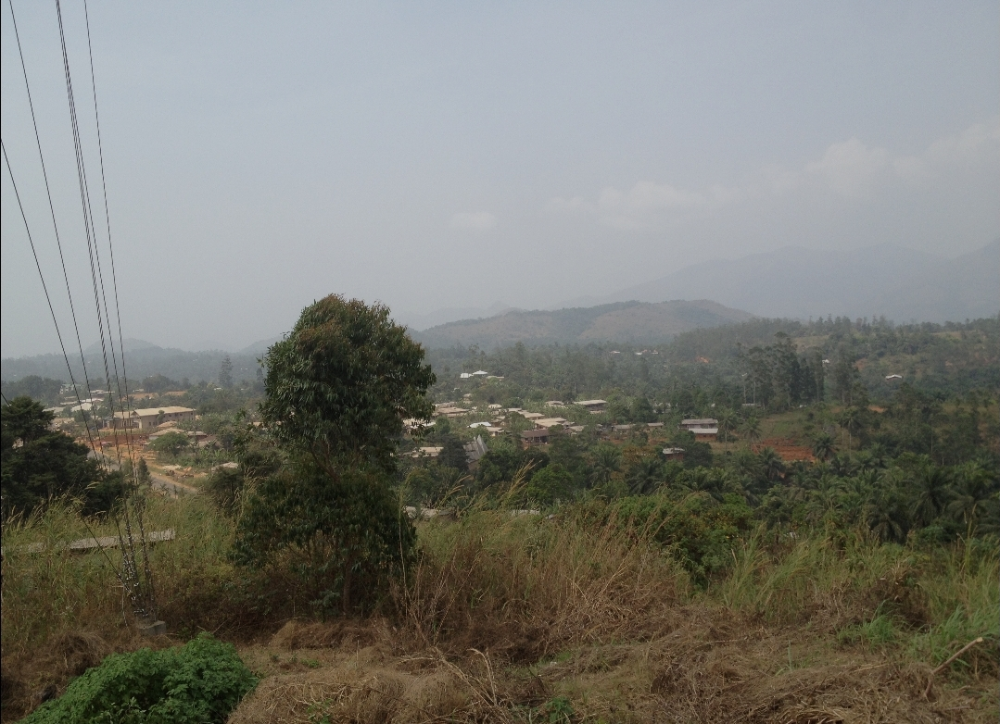

CAMEROON MINIATURE.

Bamenda, the capital of the Northwest
Region of Cameroon, has a rich cultural and
historical background. Originally inhabited by
the Tikar people and later by other ethnic groups
such as the Bafut, Bali, and Nkwen, Bamenda became a center
of traditional kingdoms known as fondoms. These fondoms were led
by Fons (chiefs) who governed the people with traditional laws and customs.
During German colonization
in the late 19th
century, Bamenda was integrated
into German Kamerun.
After Germany's defeat in World
War I, the territory was
handed over to the British under
a League of Nations mandate.
Bamenda then became part of
British Southern Cameroons
and was administered
from Nigeria.